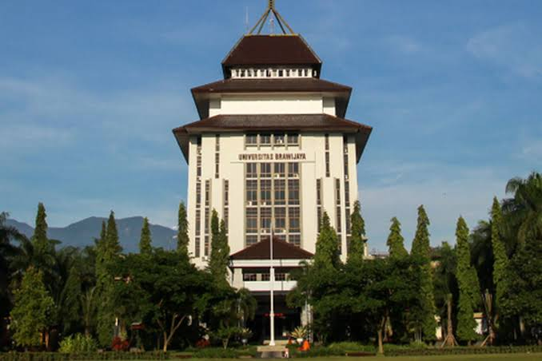

Universitas Brawijaya (UB) adalah salah satu perguruan tinggi negeri unggulan di Indonesia yang berlokasi di Malang, Jawa Timur. Terkenal dengan kampus yang asri dan berprestasi, UB menawarkan berbagai program studi berkualitas di bidang sains, teknologi, hingga ilmu sosial dengan fasilitas riset yang modern. Lingkungan akademisnya yang dinamis serta iklim Kota Malang yang sejuk menjadikan UB sebagai salah satu destinasi kuliah favorit bagi calon mahasiswa dari seluruh pelosok negeri.